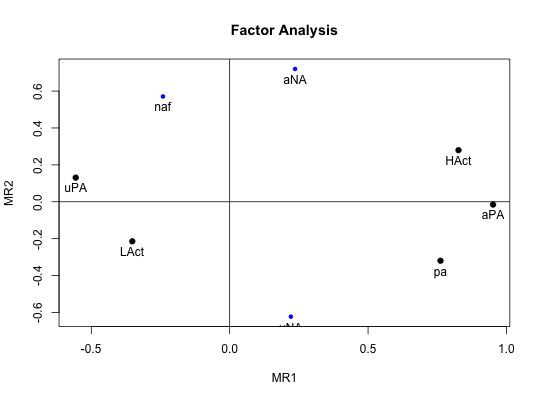
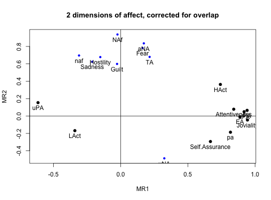

Emotions may be described either as discrete emotions or in dimensional terms. The Motivational State Questionnaire (MSQ) was developed to study emotions in laboratory and field settings. The data can be well described in terms of a two dimensional solution of energy vs tiredness and tension versus calmness. Additional items include what time of day the data were collected and a few personality questionnaire scores.
data(msq)
A data frame with 3896 observations on the following 92 variables.
activea numeric vector
afraida numeric vector
alerta numeric vector
angrya numeric vector
anxiousa numeric vector
arouseda numeric vector
ashameda numeric vector
astonisheda numeric vector
at.easea numeric vector
at.resta numeric vector
attentivea numeric vector
bluea numeric vector
boreda numeric vector
calma numeric vector
cheerfula numeric vector
clutched.upa numeric vector
confidenta numeric vector
contenta numeric vector
delighteda numeric vector
depresseda numeric vector
determineda numeric vector
distresseda numeric vector
drowsya numeric vector
dulla numeric vector
elateda numeric vector
energetica numeric vector
enthusiastica numeric vector
exciteda numeric vector
fearfula numeric vector
frustrateda numeric vector
full.of.pepa numeric vector
gloomya numeric vector
grouchya numeric vector
guiltya numeric vector
happya numeric vector
hostilea numeric vector
idlea numeric vector
inactivea numeric vector
inspireda numeric vector
intensea numeric vector
interesteda numeric vector
irritablea numeric vector
jitterya numeric vector
livelya numeric vector
lonelya numeric vector
nervousa numeric vector
placida numeric vector
pleaseda numeric vector
prouda numeric vector
quiescenta numeric vector
quieta numeric vector
relaxeda numeric vector
sada numeric vector
satisfieda numeric vector
scareda numeric vector
serenea numeric vector
sleepya numeric vector
sluggisha numeric vector
sociablea numeric vector
sorrya numeric vector
stilla numeric vector
stronga numeric vector
surpriseda numeric vector
tensea numeric vector
tireda numeric vector
tranquila numeric vector
unhappya numeric vector
upseta numeric vector
vigorousa numeric vector
wakefula numeric vector
warmhearteda numeric vector
wide.awakea numeric vector
alonea numeric vector
kindlya numeric vector
scornfula numeric vector
EAThayer's Energetic Arousal Scale
TAThayer's Tense Arousal Scale
PAPositive Affect scale
NegAffNegative Affect scale
ExtraversionExtraversion from the Eysenck Personality Inventory
NeuroticismNeuroticism from the Eysenck Personality Inventory
LieLie from the EPI
SociabilityThe sociability subset of the Extraversion Scale
ImpulsivityThe impulsivity subset of the Extraversions Scale
MSQ_TimeTime of day the data were collected
MSQ_RoundRounded time of day
TODa numeric vector
TOD24a numeric vector
IDsubject ID
conditionWhat was the experimental condition after the msq was given
scalea factor with levels msq r original or revised msq
experWhich study were the data collected: a factor with levels
AGES BING BORN CART CITY COPE EMIT FAST Fern FILM FLAT Gray imps item knob MAPS mite pat-1 pat-2 PATS post RAFT Rim.1 Rim.2 rob-1 rob-2 ROG1 ROG2 SALT sam-1 sam-2 SAVE/PATS sett swam swam-2 TIME VALE-1 VALE-2 VIEW
The Motivational States Questionnaire (MSQ) is composed of 72 items, which represent the full affective range (Revelle & Anderson, 1998). The MSQ consists of 20 items taken from the Activation-Deactivation Adjective Check List (Thayer, 1986), 18 from the Positive and Negative Affect Schedule (PANAS, Watson, Clark, & Tellegen, 1988) along with the items used by Larsen and Diener (1992). The response format was a four-point scale that corresponds to Russell and Carroll's (1999) "ambiguous--likely-unipolar format" and that asks the respondents to indicate their current standing (``at this moment") with the following rating scale: 0----------------1----------------2----------------3 Not at all A little Moderately Very much
The original version of the MSQ included 72 items. Intermediate analyses (done with 1840 subjects) demonstrated a concentration of items in some sections of the two dimensional space, and a paucity of items in others. To begin correcting this, 3 items from redundantly measured sections (alone, kindly, scornful) were removed, and 5 new ones (anxious, cheerful, idle, inactive, and tranquil) were added. Thus, the correlation matrix is missing the correlations between items anxious, cheerful, idle, inactive, and tranquil with alone, kindly, and scornful.
Procedure. The data were collected over nine years, as part of a series of studies examining the effects of personality and situational factors on motivational state and subsequent cognitive performance. In each of 38 studies, prior to any manipulation of motivational state, participants signed a consent form and filled out the MSQ. (The procedures of the individual studies are irrelevant to this data set and could not affect the responses to the MSQ, since this instrument was completed before any further instructions or tasks). Some MSQ post test (after manipulations) is available in affect.
The EA and TA scales are from Thayer, the PA and NA scales are from Watson et al. (1988). Scales and items:
Energetic Arousal: active, energetic, vigorous, wakeful, wide.awake, full.of.pep, lively, -sleepy, -tired, - drowsy (ADACL)
Tense Arousal: Intense, Jittery, fearful, tense, clutched up, -quiet, -still, - placid, - calm, -at rest (ADACL)
Positive Affect: active, alert, attentive, determined, enthusiastic, excited, inspired, interested, proud, strong (PANAS)
Negative Affect: afraid, ashamed, distressed, guilty, hostile, irritable , jittery, nervous, scared, upset (PANAS)
The PA and NA scales can in turn can be thought of as having subscales: (See the PANAS-X) Fear: afraid, scared, nervous, jittery (not included frightened, shaky) Hostility: angry, hostile, irritable, (not included: scornful, disgusted, loathing guilt: ashamed, guilty, (not included: blameworthy, angry at self, disgusted with self, dissatisfied with self) sadness: alone, blue, lonely, sad, (not included: downhearted) joviality: cheerful, delighted, energetic, enthusiastic, excited, happy, lively, (not included: joyful) self-assurance: proud, strong, confident, (not included: bold, daring, fearless ) attentiveness: alert, attentive, determined (not included: concentrating)
The next set of circumplex scales were taken (I think) from Larsen and Diener (1992). High activation: active, aroused, surprised, intense, astonished Activated PA: elated, excited, enthusiastic, lively Unactivated NA : calm, serene, relaxed, at rest, content, at ease PA: happy, warmhearted, pleased, cheerful, delighted Low Activation: quiet, inactive, idle, still, tranquil Unactivated PA: dull, bored, sluggish, tired, drowsy NA: sad, blue, unhappy, gloomy, grouchy Activated NA: jittery, anxious, nervous, fearful, distressed.
Keys for these separate scales are shown in the examples.
In addition to the MSQ, there are 5 scales from the Eysenck Personality Inventory (Extraversion, Impulsivity, Sociability, Neuroticism, Lie). The Imp and Soc are subsets of the the total extraversion scale.
Data collected at the Personality, Motivation, and Cognition Laboratory, Northwestern University.
Rafaeli, Eshkol and Revelle, William (2006), A premature consensus: Are happiness and sadness truly opposite affects? Motivation and Emotion, 30, 1, 1-12.
Revelle, W. and Anderson, K.J. (1998) Personality, motivation and cognitive performance: Final report to the Army Research Institute on contract MDA 903-93-K-0008. (http://www.personality-project.org/revelle/publications/ra.ari.98.pdf).
Thayer, R.E. (1989) The biopsychology of mood and arousal. Oxford University Press. New York, NY.
Watson,D., Clark, L.A. and Tellegen, A. (1988) Development and validation of brief measures of positive and negative affect: The PANAS scales. Journal of Personality and Social Psychology, 54(6):1063-1070.
affect for an example of the use of some of these adjectives in a mood manipulation study.
make.keys, scoreItems and scoreOverlap for instructions on how to score multiple scales with and without item overlap. Also see fa and fa.extension for instructions on how to do factor analyses or factor extension.
data(msq) if(FALSE){ #not run in the interests of time #basic descriptive statistics describe(msq) } #score them for 20 short scales -- note that these have item overlap #The first 2 are from Thayer #The next 2 are classic positive and negative affect #The next 9 are circumplex scales #the last 7 are msq estimates of PANASX scales (missing some items) keys <- make.keys(msq[1:75],list( EA = c("active", "energetic", "vigorous", "wakeful", "wide.awake", "full.of.pep", "lively", "-sleepy", "-tired", "-drowsy"), TA =c("intense", "jittery", "fearful", "tense", "clutched.up", "-quiet", "-still", "-placid", "-calm", "-at.rest") , PA =c("active", "excited", "strong", "inspired", "determined", "attentive", "interested", "enthusiastic", "proud", "alert"), NAf =c("jittery", "nervous", "scared", "afraid", "guilty", "ashamed", "distressed", "upset", "hostile", "irritable" ), HAct = c("active", "aroused", "surprised", "intense", "astonished"), aPA = c("elated", "excited", "enthusiastic", "lively"), uNA = c("calm", "serene", "relaxed", "at.rest", "content", "at.ease"), pa = c("happy", "warmhearted", "pleased", "cheerful", "delighted" ), LAct = c("quiet", "inactive", "idle", "still", "tranquil"), uPA =c( "dull", "bored", "sluggish", "tired", "drowsy"), naf = c( "sad", "blue", "unhappy", "gloomy", "grouchy"), aNA = c("jittery", "anxious", "nervous", "fearful", "distressed"), Fear = c("afraid" , "scared" , "nervous" , "jittery" ) , Hostility = c("angry" , "hostile", "irritable", "scornful" ), Guilt = c("guilty" , "ashamed" ), Sadness = c( "sad" , "blue" , "lonely", "alone" ), Joviality =c("happy","delighted", "cheerful", "excited", "enthusiastic", "lively", "energetic"), Self.Assurance=c( "proud","strong" , "confident" , "-fearful" ), Attentiveness = c("alert" , "determined" , "attentive" ) #acquiscence = c("sleepy" , "wakeful" , "relaxed","tense") )) msq.scores <- scoreItems(keys,msq[1:75]) #show a circumplex structure for the non-overlapping items fcirc <- fa(msq.scores$scores[,5:12],2) fa.plot(fcirc,labels=colnames(msq.scores$scores)[5:12])#> Warning: Missing values (NAs) in the correlation matrix do not allow for SMC's to be found for all variables. #> I will try to estimate SMCs for those variables by their non-NA correlations.#> #> SMC(s) for variables alone kindly scornful were replaced (if possible) with smcs based upon their (its) non-NA correlationsf2 <- fa(msq.overlap$cor,2) fa.plot(f2,labels=colnames(msq.overlap$cor),title="2 dimensions of affect, corrected for overlap")if(FALSE) { #extend this solution to EA/TA NA/PA space fe <- fa.extension(cor(msq.scores$scores[,5:12],msq.scores$scores[,1:4]),fcirc) fa.diagram(fcirc,fe=fe,main="Extending the circumplex structure to EA/TA and PA/NA ") #show the 2 dimensional structure f2 <- fa(msq[1:72],2) fa.plot(f2,labels=colnames(msq)[1:72],title="2 dimensions of affect at the item level") #sort them by polar coordinates round(polar(f2),2) }